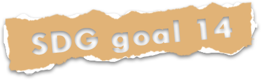
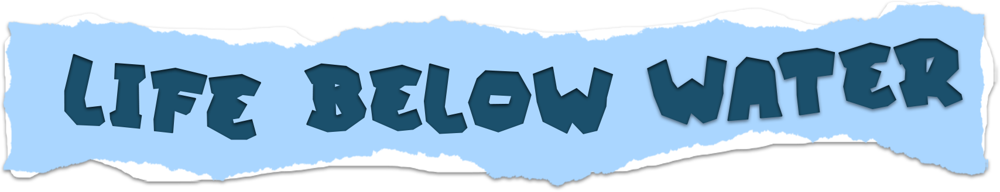
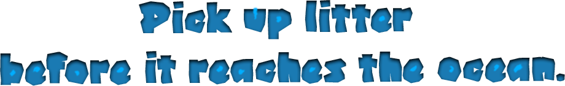

COMM2754_Digital Media Specialisation 1_26t2
24/07/2026
RMIT University Vietnam, Saigon South Campus, School of Communication and Design,
Digital Media Program

Conserve and sustainably use the oceans, seas and marine resources for sustainable development


Annie Leonard's quote, "There is no such thing as 'away.' When we throw anything away it must go somewhere," reminds us that waste we discard on land often ends up in the ocean, harming marine life and ecosystems, which is the exact concern at the heart of SDG 14: Life Below Water. Achieving this goal means recognizing that our trash doesn't disappear; it becomes someone else's or the ocean's problem. Stop throwing waste into the ocean, and start taking responsibility for where it truly goes.
A project by Tieu Dinh Ngoc.
Nga 5 chuong cho members: Trinh Tuan Hung, Ho Kieu Phuong, Tran Tung Phuong, Pham Hoai An.
Onlinelad (2 July 2026) There Is No Such Thing as Away: Annie Leonard on the Responsibility We Cannot Escape,
Onlinelad website, accessed 14 July 2026. https://onlinelad.com/blog/no-such-thing-as-away-annie-leonard/